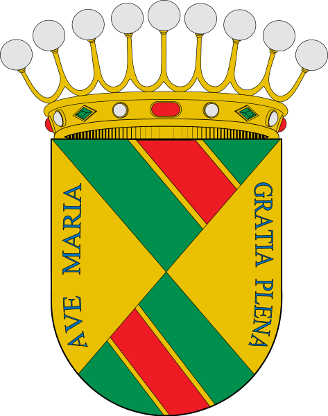
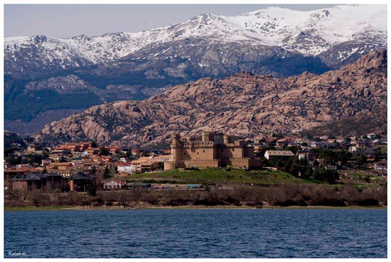
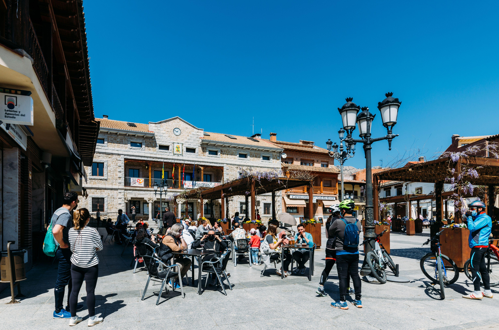
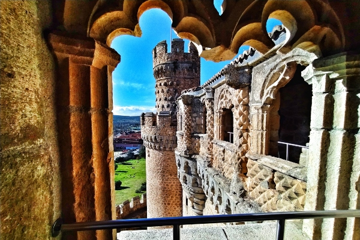
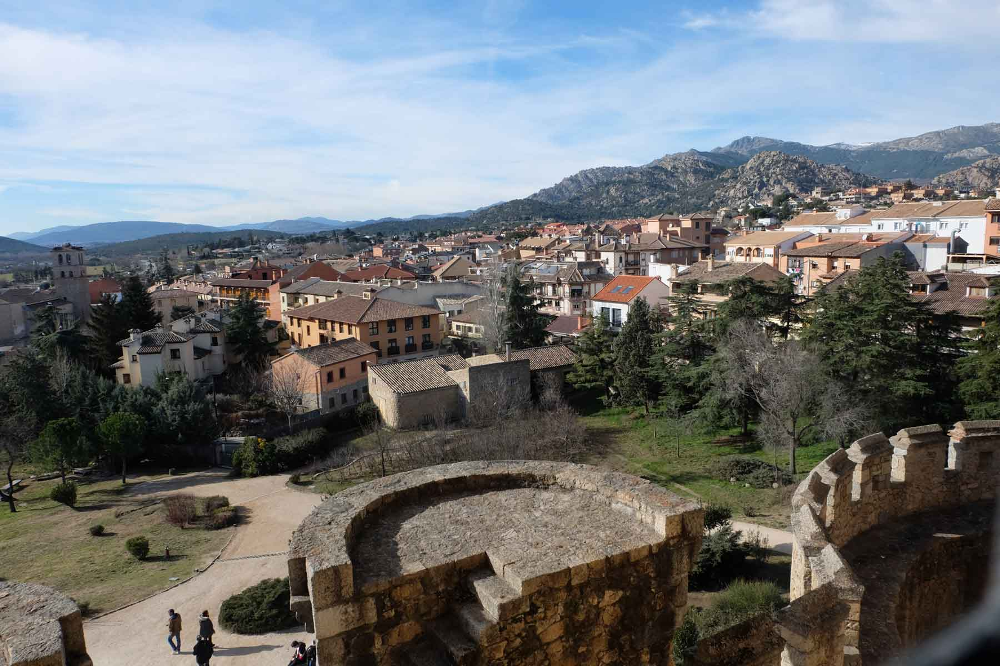

Manzanares el Real es un municipio de la Comunidad de Madrid, España, situado al pie de la Sierra de Guadarrama, a unos 50 km al norte de la capital. Es conocido por su impresionante castillo de los Mendoza, una de las fortalezas mejor conservadas de la región, construido en el siglo XV. El pueblo se encuentra junto al embalse de Santillana y dentro del Parque Regional de la Cuenca Alta del Manzanares, lo que lo convierte en un destino popular para senderistas, escaladores y amantes de la naturaleza. La Pedriza, una formación rocosa única, es uno de sus principales atractivos naturales y un paraíso para la escalada. Manzanares el Real tiene un encanto rural con una rica historia, reflejada en su patrimonio arquitectónico, como la iglesia de Nuestra Señora de las Nieves y el Puente Viejo. Además, el municipio ofrece una variada oferta gastronómica y cultural, con ferias y eventos a lo largo del año.
Las fiestas patronales de Manzanares el Real se celebran en honor a San Andrés, el patrón del municipio. Estas festividades tienen lugar a finales de noviembre y principios de diciembre, y son una mezcla de tradiciones religiosas y actividades lúdicas. Durante las fiestas, los vecinos participan en misas, procesiones y eventos culturales, así como en actividades recreativas como conciertos, ferias y competiciones deportivas. La gastronomía local también juega un papel importante, con platos típicos que se ofrecen durante las celebraciones.